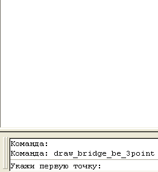

Команда:draw_bridge_be_3point
Команда:draw_bridge_be_3pointПо трем точкам чертится условный знак моста
Команда:draw_bridge_be_3point
 Укажи первую точку:
Укажи первую точку:
 Указывает точку на первом угле моста
Указывает точку на первом угле моста
Укажи вторую точку:
Указывает точку на вторм угле моста
Укажи третью точку:
Указывает точку на трутьем угле моста
Пример работы программы
